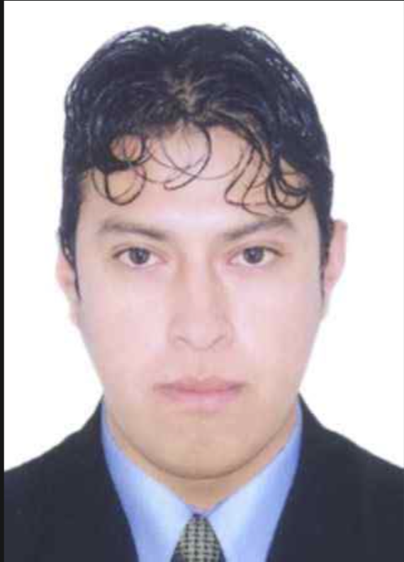

La Secretaría Académica de la Universidad Peruana de Ciencias Aplicadas (UPC) certifica que el/la señor/ita SANTIAGO RAUL ALIAGA OLIVARES, con código U202418492, alumno regular del 6to ciclo de la carrera de Ingeniería Civil, ha obtenido las calificaciones finales que se indican a continuación:
| Asignatura | Nota | Créditos | Fecha |
|---|---|---|---|
| Periodo 2026-01 (5to Ciclo) | |||
| Resistencia de Materiales II | 17.00 | 4 | 07/2026 |
| Mecánica de Suelos I | 18.00 | 4 | 07/2026 |
| Mecánica de Fluidos e Hidráulica | 17.00 | 4 | 07/2026 |
| Topografía Aplicada y Geodesia | 18.00 | 3 | 07/2026 |
| Periodo 2026-02 (6to Ciclo) | |||
| Análisis Estructural I | 18.00 | 4 | 11/2026 |
| Tecnología del Concreto y Materiales | 17.00 | 4 | 11/2026 |
| Hidrología General | 18.00 | 3 | 11/2026 |
| Ingeniería de Caminos y Trazado Vial | 17.00 | 4 | 11/2026 |
Promedio Ponderado Acumulado: 17.50 | Convalidaciones: 0 asignaturas (0 créditos)
El currículum del alumno dentro de la carrera de Ingeniería Civil se encuentra en curso (6to ciclo) a la fecha de emisión de este certificado.
Se expide el presente certificado a solicitud del/de la interesado/a.